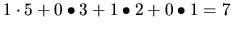

| Fibinary Numbers |
Where each term is the sum of the two preceding terms (note that there is only one 1 in the sequence as defined here). Using this scheme, the sequence ``1010'' could be interpreted as . This representation is called a Fibinary number.
Note that there is not always a unique Fibinary representation of every number. For
example the number 10 could be represented as either 8 + 2 (10010) or as 5 + 3 + 2
(1110). To make the Fibinary representations unique, larger Fibonacci terms must
always be used whenever possible (i.e. disallow 2 adjacent 1's). Applying this rule to the
number 10, means that 10 would be represented as 8+2 (10010).
In case that two or more test cases had to be solved, it must be a blank line between two consecutive, both in input and output files.
10010 1 10000 1000 10000 10000
10100 100000 100100